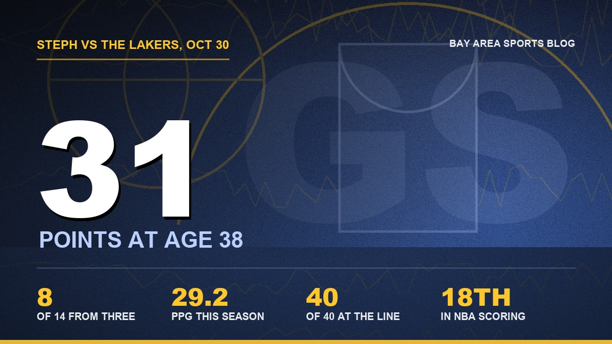

Steph Curry Is 38 and He Just Put Luka on the Floor
Down 25 in the first quarter, and the oldest guy on the court decided he wasn't going out like that.

I rewound it four times. Then I sent it to everybody I know who owns a Lakers hat.
Midway through the third quarter tonight at Chase Center, Steph Curry got Luka Doncic isolated on him. A couple of hard dribbles, one change of direction, and Luka just sat down. Not a slip. Not a bad floor. His legs went one way and the rest of him went to the hardwood. And Steph, who turns 39 in March, didn't even drive the open lane. He took one step back behind the line and buried the three while Luka was still getting up.
The building lost its mind. I was on my couch and I stood up so fast I knocked the remote under the coffee table, and I didn't find it until the fourth quarter. Steph looked almost surprised at himself afterward, like even he couldn't believe the legs still had that in them.
They do. Apparently they do.
First, let me be mad about the first quarter
Because I'm not letting the comeback wash it away. The first twelve minutes were the worst quarter of basketball I've watched from this team in a long time. Lakers 38, Warriors 15. Luka had 21 of those by himself, with five threes, and he was walking into them like it was a layup line. Nobody was guarding anybody. At one point it was 25, and I'm sitting there thinking we're about to lose to these guys by 20 twice in ten days, because they already beat us 127 to 105 in the opener down in L.A.
My brother texted "turn it off." I almost did. I'm glad I didn't, but I want it on the record that I was one bad possession away.
And then the second quarter happened, and it was the first quarter in reverse. Warriors 38, Lakers 15. Tied at 53 at the half. The defense finally woke up, the bench came in and actually made shots, and suddenly the building that sounded like a library was loud again. No team in the shot clock era had ever been down 23 or more after one quarter and been tied or ahead at halftime. We did it in twelve minutes.
Then Steph took over
He had 22 going into the fourth and the Warriors were up 85 to 80. Luka had 35 at that point, and honestly, for three quarters he was unbelievable. He picked up a technical with 21.8 seconds left in the third and the whole arena booed him for it, which I enjoyed more than I probably should have.
The fourth was ours. We won it 27 to 15. Luka scored two points in the whole quarter. Steph scored nine, and somewhere in there he passed Dominique Wilkins for 18th on the all time scoring list. Think about that for a second. Dominique Wilkins. The Human Highlight Film. Steph's now ahead of him on the list of the most points anybody's ever scored in this league, and he got there the same night he made the best player on the other team fall down.
Final: Warriors 112, Lakers 95. Steph finished with 31 points on 11 of 23, eight of 14 from three, six assists and four rebounds in 31 minutes. Luka got his 37, but he needed 27 shots for it, and the Lakers coughed it up 22 times. Austin Reaves had eight of those turnovers by himself. Podziemski went for 21, De'Anthony Melton had 16 off the bench, Georges Niang went three for three from deep, and Draymond scored two points and still might have been the second most important guy on the floor with nine assists and three steals.

What he's doing at 38 shouldn't be possible
I keep waiting for the year he slows down. Every summer somebody on the radio says this is the season the legs go, and every fall I brace for it. It hasn't come.
Five games in, he's averaging 29.2 points a night. He's shooting 47.7 percent from the field and 44 percent from three on ten attempts a game. He's 40 for 40 at the free throw line. Forty for forty! He went for 44 in Minnesota on Wednesday and made all 16 of his free throws doing it. Monday in Denver he took eight shots and made eight. And he's doing all of it in about 28 minutes a night, which means Kerr is finally managing his body the way I've been begging him to for three years.
Most guys who play this long survive on craft. They slow it down, post up smaller guards, take what the defense gives them. Steph is still doing the stuff that made him Steph. The relocation threes. The 30 foot pull up in transition. And, apparently, the handle that sends a 27 year old superstar to the floor in front of 18,000 people.
Is it fair that I'm this emotional about a regular season game in October? No. It's an NBA Cup group game. I know. But I've spent the last two years watching the front office waste what was left of his prime with half measures and bad trades, and I've written plenty of columns about it on this site. He signed that two year extension in September and took less money so they could build around him. Nights like tonight are why I wanted him to stay, and they're also why I get so angry when the people upstairs don't match his effort.
Three straight wins, and I'm getting ideas
We started this season 0 and 3. Now it's 3 and 3, three in a row, and Steph's put up 24, 44 and 31 in those three. The Lakers are 4 and 2 and they came into our building thinking it was going to be another blowout. Instead they left with their best player picking himself up off the floor in a clip that'll be on every phone in the Bay by morning.
Clippers come to Chase on Sunday night. I'm not going to say anything I'll regret by Monday.
I'll just say I found the remote. I'm keeping it close this time.
More coverage: Warriors · Stephen Curry · NBA · Bay Area Sports Blog home